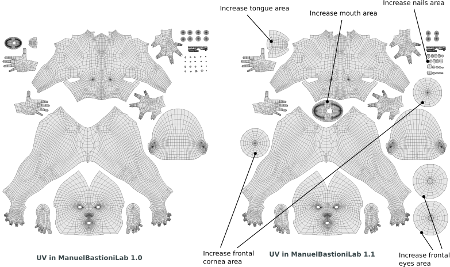
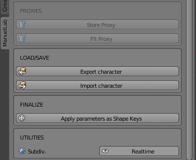

Release notes for ManuelBastioniLAB 1.1.0
ManuelBastioniLAB 1.1.0 (download here) completes the support for tridimensional shojo anime, adding three new base meshes: the classic-type male and the modern-style male and female.
The topology of these models is greatly improved, in order to simplify the geometry and avoid unwanted creases during the toon rendering.
Another important feature is the improvement of UV layers for all characters. The 1.1 version also adds some fundamental modifiers for the female breast and other new morphings.
The code is more robust and the debug is more easy, thanks to a new professional log system.
Details
New base characters and database for anime
- New base character classic anime male shojo AM-S-026
- New base character modern anime male shojo AM2-S-008
- New base character modern anime female shojo AF2-S-004
Improvement of existing anime models
- Improved topology for anime head, optimized for toon rendering.
- Fixed mouth material assignment.
- Improved bones weighting.
- Classic anime female shojo AF-S-036 -> AF-S-066
Improvement of existing human models
- Modelling improvements.
- New UV layers: Increment of area used by eyes, mouth, tongue, teeeh and nails.

- Caucasian female (F-C-031) --> F-C-041
- Asian female (F-As-012)--> F-As-014
- Afro female (F-Af-003) --> F-Af-005
- Caucasian male (M-C-064) --> M-C-068
- Asian male (M-As-002) --> M-As-004
- Afro male (M-Af-005) --> M-Af-007
New modifiers:
- Breast push modifier (with fuzzy function)
- Breast Z position
- Breast X position
- Shoulder X size
- Shoulder X position (improvement)
- Armpit position Z
- Nails length
- Pelvis X size
- Pelvis Y size
- Pelvis angle
- Head flat face
GUI:
- "Convert shapekey" button moved from "Expression" section to the new section "Finalize".

Modelling bugfixes
- Fixed many morphings in anime model AF-S-066
- Improved closed eye morphs for AF-S-066
Code development:
- Added a new advanced log system.
- Database optimization and size compression.
- Improved robustness of the libraries.
- Added obj marker property to easily identify ManuelBastioniLAB characters in the scene: manuellab_vers = list of three float.
Code bugfixes
- Fixed the bug for scenes with improper polygons
- Fixed the error in case of hidden armatures